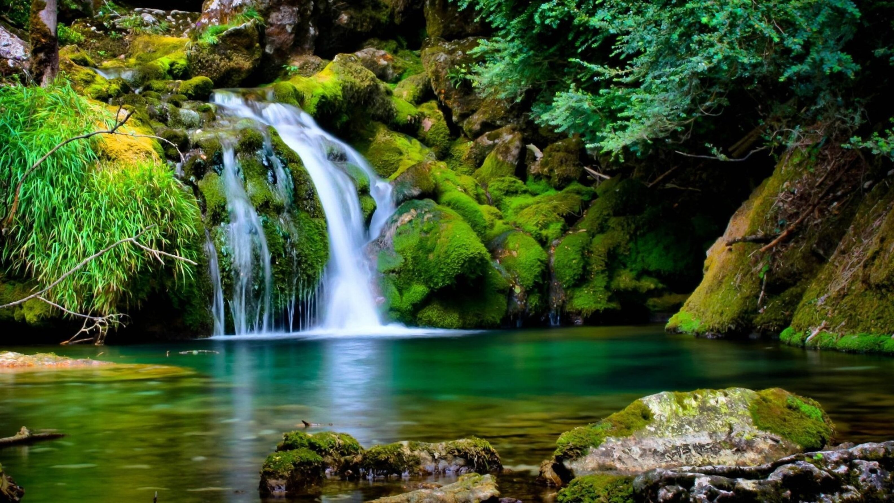

Exploring Natural Wonders
Discover the awe-inspiring beauty of natural landscapes accross the globe,
from the Victoria Falls in Zimbawe to the captivating
Aurora Borealis visible in various countries.
Natural Wonders
- Victoria Falls, Zimbawe
- Grand Canyon, USA
- Aurora Borealis, Various Countries
- Mount Everest, Nepal
- Great Barrier Reef, Austrailia
Nature always wears the color of the spirit.
-
Ralph Waldo Emerson
Benefits of Experiencing Natural Beauty
- Fostering a sense of wonder
- Deeping appreciation for the planet
- Creating lasting memories
Discover More


The Majestic Victoria Faklls
Explore more natural wonders.